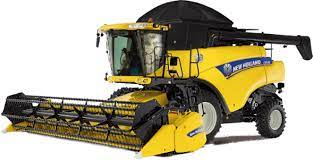

R$ 600.000,00
Eixo dianteiro com suspensão TLS, até 8% a mais em produtividade; Assento com suspensão ativa, reduz em até 90% dos movimentos verticais; JDLink e piloto automático de fábrica Soluções John Deere - Barra de tração reforçada para Plantadeira DB40.
R$ 1.750.000,00
Colheitadeira NEW HOLLAND CR 5.85 2022/2022
Alta performance com duplo rotor. Potência nominal 272cv Potência máxima 319cv Tanque graneleiro 7.050 L Plataforma 30 pés